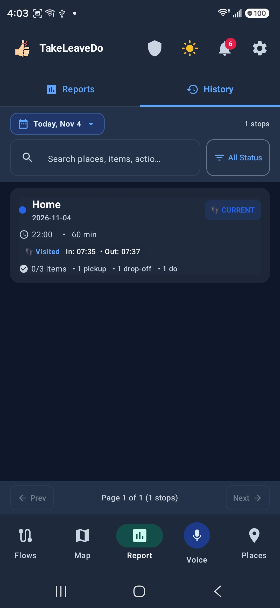

The ultimate routine and delivery assistant for Android. Combines precision GPS geofences and Wi-Fi presence corroboration with hands-free on-device voice commands — keeping 100% of your data private on your phone.

Whether you're dispatching 30 delivery stops or managing complex daily routines, TakeLeaveDo keeps you on schedule without manual taps.
Assign items to Take (pick up), Leave (drop off), or custom Do actions (e.g. "Pay bill", "Ask for manager") for each stop. Automatically tracks cross-stop item handoffs.
Never suffer from GPS drift inside parking structures or warehouses. TakeLeaveDo matches known BSSID Wi-Fi beacons alongside circular GPS geofences for zero-lag arrival detection.
Accidentally swiped? Swipe any stop item or action to the left for a smooth 2-second countdown with an instant UNDO button before deletion commits to disk.
Say "Create a stop at Harbor Freight next Monday at 3 pm, collect drill set, deliver invoice, and ask for manager". Natural, unpunctuated voice parsing powered by on-device Whisper & Gemma.
Your routes, notes, addresses, and microphone audio never touch a remote server. Everything is processed locally in an encrypted Room SQLite database on your device.
Provision an entire day's delivery flow in seconds. Scan a QR code or fetch a daily JSON payload over Wi-Fi with automatic duplicate address matching and conflict checking.
Organize your routine destinations with granular geofence radiuses (80m, 100m, 150m+). Instantly discover nearby commercial places and storefronts using OpenStreetMap Overpass auto-scanning with a single tap.
Toggle individual place alerts, attach recurring checklist templates, configure notification alerts, and link encrypted Wi-Fi BSSID beacons for indoor presence corroboration.
Learn about Saved Places →
Drive safely with completely hands-free voice capture. Powered by on-device Google FunctionGemma 270M (LiteRT-LM) and live streaming speech-to-text.
Speak naturally without punctuating sentences: the app extracts compound stop destinations, dates, times, and categorizes multiple Take/Leave/Do items automatically. Includes silence auto-completion, contextual suggestion chips, and silent wake-word listening.
Explore Voice Commands →
Switch instantly between a clear chronological timeline and an OpenStreetMap vector route. Stops are color-coded by readiness: Planned (Gray), On Site (Blue), Completed (Emerald Green), or Action Needed (Amber).
Displays your real-time GPS position with a live pulsing YOU radar badge. Multiple stops at the same physical place throughout the day (e.g. morning pickup and afternoon return) merge into a unified, non-overlapping marker box.
Learn about Flow Views →
Gain full visibility into your schedule across two dedicated views:
• Reports Tab: Real-time high-level analytics including task completion percentage, total places visited, time spent per stop, and transit route mileage.
• History Tab: Searchable, status-filtered timeline of every stop visited today or on past dates. Review actual arrival/departure timestamps and inspect item handoffs (Pick Up, Drop Off, Do).


Install TakeLeaveDo today. Free, open-source, and guaranteed 100% ad-free with zero telemetry.